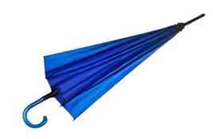
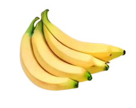
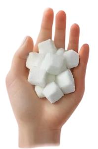
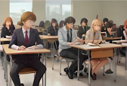
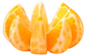
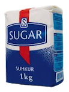
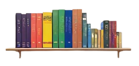
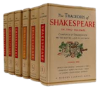

Счетные слова в китайском языке
把 bă
1. Индивидуальное счетное слово для предметов, имеющих ручку/рукоятку, либо специально приспособленных, чтобы держать их в руках.

我有两把小刀儿, 一把是中国刀,一把是法国刀。 中国刀是我买的, 法国刀是朋友送给我的。
下雨了, 妈妈从家里拿了两把伞去学校接孩子, 刚走到学校门口, 雨就停了。
这个教室有18张桌子, 可是只有15把椅子。 我们再去搬3把椅子来吧。
我姐姐有两把剪子, 一把大剪子, 一把小剪子。 她用大剪子裁衣服, 用小剪子剪指甲。
A: 我丢了一把钥匙。
B: 什么钥匙?
A: 大门钥匙。
B: 刚才捡到一把,不知道是不是你的。
A: 是吗?我去看看。
B: 什么钥匙?
A: 大门钥匙。
B: 刚才捡到一把,不知道是不是你的。
A: 是吗?我去看看。
Словосочетания
- 一把锁
- 一把扇子
- 一把笤帚
- 一把茶壶
- 一把勺子
- 一把刷子
- 一把梳子
- 一把算盘
- 一把尺子
- 一把小提琴
- 一把斧子
- 一把锅子
Новые слова
送
sòng
дарить
伞
sǎn
зонт
接
jiē
встречать
剪子
jiǎnzi
НОЖНИЦЫ
裁
cái
отрезать
剪
jiǎn
подрезать (ногти)
指甲
zhǐjiǎ
ногти (на руках)
钥匙
yàoshi
Ключ
检
jiǎn
находить
锁
suǒ
замок
扇子
shànzi
Веер
笤帚
tiáozhǒu
метелка (для пыли)
茶壶
cháhú
чайник
勺子
sháozi
половник, ковш
刷子
shuāzi
щетка
梳子
shūzi
расческа
算盘
suànpán
счеты
尺子
chǐzi
линейка
小提琴
xiǎotíqín
скрипка
斧子
fǔzi
топор
鋸子
jùzi
пила
2. СВЯЗКА, ПУЧОК: долевое счетное слово для связанных, скрепленных друг с другом одинаковых предметов. В речи это счетное слово часто употребляется с эризацией.

A: 你买什么了?
B: 我买了一把菠菜, 两把小萝卜。 你买什么了?
A: 我买了一斤苹果, 一把香蕉。
B: 我买了一把菠菜, 两把小萝卜。 你买什么了?
A: 我买了一斤苹果, 一把香蕉。
Словосочетания
- 一把鲜花
- 一把筷子
- 一把挂面
Новые слова
菠菜
<pinyin>
шпинат
小萝卜
<pinyin>
редька
香蕉
<pinyin>
банан
鲜花
<pinyin>
Свежие цветы
筷子
<pinyin>
палочки для еды
挂面
<pinyin>
вермишель (сухая)
3. ГОРСТЬ: долевое счетное слово, обозначающее количество предметов, которое можно одновременно держать в одной руке.

小朋友要走了, 我又抓了一把糖放在他的口袋里。他笑着说: “谢谢阿姨。”
Словосочетания
- 一把米
- 一把花生
- 一把花生米
- 一把豆子
- 一把瓜子
- 一把钱
Новые слова
口袋
<pinyin>
карман
米
<pinyin>
РИС
花生
<pinyin>
арахис
花生米
<pinyin>
неочищенный арахис
豆子
<pinyin>
бобы или горох
瓜子
<pinyin>
Дынные семечки
钱
<pinyin>
деньги
4. Индивидуальное счетное слово для людей, обладающих специальными навыками, определенными способностями; для некоторых абстрактных существительных и слов, которые служат для украшения речи.
我姐姐干家务活儿是一把好手儿,她什么都会干, 什么都干得很好, 做饭, 洗衣服,样样都行。
Словосочетания
- 一把骨头(瘦得只剩一把骨头了)
- 一把力气(他可真有一把力气!)
- 一把劲儿(还得加一把 劲儿)
- 一把力(再努一把力)
- 一把年纪(有一把年纪了)
- 一把手(他里里外外一把手)
- 把能手
- 一把好手
- 一把火(放了一把火)
Новые слова
干
<pinyin>
делать, выПОЛНЯТЬ какую-либо работу
活儿
<pinyin>
работа
好手儿
<pinyin>
умелец, мастер своего дела
行
<pinyin>
умелый, компетентный
骨头
<pinyin>
кость, скелет
气
<pinyin>
физическая сила
劲儿
<pinyin>
сила, энергия
里里外外
<pinyin>
внутри и снаружи дома
能手
<pinyin>
мастер, специалист
放火
<pinyin>
поджигать, зажигать
Примечания
Перед # обязательно должно стоять числительное кроме сочетаний со словом "huõ *".
5. СХВАТЫВАНИЕ: счетное слово, указывающее на хватательное движение рукой.

昨天天太热了, 我回到家里以后, 先去擦了一把脸, 然后又喝了一瓶汽水, 坐下来凉快了一会儿, 才吃晚饭。
Словосочетания
- 拉了他一把
- 帮他一把
Новые слова
拉
<pinyin>
протянуть руку помощи
班 bān
1. КЛАСС, КОМАНДА, ГРУППА: собирательное счетное сло во, обозначает группу людей, работающих или учащихся вместе.

这(一)班学生都是学汉语的, 一共有十个人, 四个法国人, 两个美国人, 一个英国人, 还有三个意 大利人。
Словосочетания
- 一班年轻人
- 原班人马
Новые слова
原
<pinyin>
исходный, изначальный
人马
<pinyin>
личный состав
2. ПЛАВАНИЕ, РЕЙС: индивидуальное счетное слово для людей, работающих посменно, и для регулярных транспортных рейсов.
A:请问, 头班车几点开?
B:5点半。
A:赶早7点的火车来得及吗?
B:来得及。
A:末班车到几点?
B:到11点。
A:谢谢。
B:5点半。
A:赶早7点的火车来得及吗?
B:来得及。
A:末班车到几点?
B:到11点。
A:谢谢。
Словосочетания
- 下一班车
- 下一班飞机
- 最后一班岗
- 医院的护士一般都是三班儿倒
Новые слова
请问
<pinyin>
могу я спросить
头
<pinyin>
первый
来得及
<pinyin>
успеть
末
<pinyin>
последний
岗
<pinyin>
вахта. пост
倒
<pinyin>
меняться, обменивать
瓣 bàn(r)
ЛЕПЕСТОК, СЕГМЕНТ, ОСКОЛОК, ЧАСТИЦА: индивидуальное счетное слово для обозначения сегментов, кусочков, частей, ломтиков фруктов, растений, семян, зерен и др.

A: 这儿有几瓣橘子, 你吃不吃?
B: 你怎么不吃啊?
A: 太酸, 我吃不了。
B: 我也怕酸。
B: 你怎么不吃啊?
A: 太酸, 我吃不了。
B: 我也怕酸。
A: 你怎么了?
B: 我肚子疼。
A: 你吃几瓣蒜吧。
B: 几瓣蒜就能治病吗?
A: 不信, 你吃几瓣试试。
B: 我肚子疼。
A: 你吃几瓣蒜吧。
B: 几瓣蒜就能治病吗?
A: 不信, 你吃几瓣试试。
Словосочетания
- 把梨切成四瓣儿
Новые слова
酸
<pinyin>
кислый
肚子
<pinyin>
желудок, живот
蒜
<pinyin>
чеснок
不信
<pinyin>
не доверять, сомневаться
切
<pinyin>
резать на кусочки, измельчать
帮 bāng
БАНДА, КЛИКА, ШАЙКА: собирательное счетное слово для группы людей.
他找到了一个安静的地方,刚要坐下来看书,忽然来了一帮小学生,在他旁边又打又闹。他很生气,拿起书包就走了。
Словосочетания
- 一帮人
- 一帮孩子
- 一帮坏蛋
- 一帮流氓
Новые слова
书包
<pinyin>
портфель
坏蛋
<pinyin>
плохой парень
流氓
<pinyin>
жулик, мошенник
包 bāo
СВЯЗКА, УЗЕЛ, ПАКЕТ: емкостное счетное слово для завернутых, запакованных предметов.

她走进厨房,把刚买回来的一包茶叶、一包白糖和一斤鸡蛋放在 桌子上,就开始做饭了。
星期天早上,她打扫完房间就洗起衣服来了。洗了一上午,才把那包脏衣服洗完。
Словосочетания
- 一包大米
- 一包棉花
- 一包东西
- 一包饼干
- 一包点心
- 一包烟 (20支)
- 一包火柴 (10盒)
- 一大包书
Новые слова
厨房
<pinyin>
КУХНЯ
茶叶
<pinyin>
чай, чайные листочки
打扫
<pinyin>
подметать, убирать
大米
<pinyin>
рис
棉花
<pinyin>
хлопок
饼干
<pinyin>
печенье, выпечка
点心
<pinyin>
легкая закуска, пирожки и выпечка
烟
<pinyin>
сигарета
火柴
<pinyin>
спичка
杯 bei
ЧАШКА, СТАКАН, КРУЖКА, БОКАЛ: емкостное счетное слово, обозначающее объем вещества в данной емкости.
我每天早上都是吃两片面包, 喝一杯牛奶,还要加一个鸡蛋。这是我多年来的习惯。
Словосочетания
- 一杯水
- 一杯茶
- 一杯酒
- 再来一杯
- 再喝一杯
- 再倒一杯
Новые слова
加
<pinyin>
плюс, прибавить
酒
<pinyin>
вино, алкогольные напИТКИ
倒
<pinyin>
наливать
本 běn
ТОМ: индивидуальное счетное слово для книг и другой печатной продукции, имеющей корешок.

上星期我朋友给我来了一封信, 他让我给他买一本《汉英词典》和一本汉语语法书。我已经买好了, 准备给他寄去。
Словосочетания
- 一本书
- 一本杂志
- 一本画报
- 一本小说
- 一本字典
笔 bi
1. КИСТЬ, КИСТОЧКА: индивидуальное счетное слово для иероглифов, рисунков, картин и т. п.
他觉得自己的字写得不好看, 就下决心练习。
每天写一两个小时, 从来也不间断。
中学毕业的时候, 他已经能写一笔好字了。
Словосочетания
- 一笔漂亮字
- 他还能画几笔画儿
Новые слова
决心
<pinyin>
решимость, решиться
间断
<pinyin>
прерываться, останавливаться
2. ПУНКТ, СТАТЬЯ: долевое счетное слово для обозначения денежных сумм, денежных переводов и т. п.
他们两个人攒了一笔钱, 买了一些家具和衣服, 准备明年春节结婚。
然后, 他们还要去南方旅行。
Словосочетания
- 一笔收入
- 一笔开支
- 一笔交易
- 一笔买卖
- 一笔生意
- 一笔款子
- 一笔债
- 一笔经费
- 一笔财产
- 一笔帐
Новые слова
攒
<pinyin>
сберегать, накапливать
家具
<pinyin>
мебель
收入
<pinyin>
Доход
开支
<pinyin>
расходы
交易
<pinyin>
торговля
买卖
<pinyin>
бизнес, дело, сделка
生意
<pinyin>
дело, торгоВЛЯ фонд, накопления,
款子
<pinyin>
сумма денег
债
<pinyin>
долги
经费
<pinyin>
издержки, расходы
财产
<pinyin>
собственность
帐
<pinyin>
счет
遍 biàn
РАЗ: обозначает ход действия от начала до конца.
我把写好的那篇文章看了一遍, 发现里边有不少错字,
还有一些不通顺的句子, 我又重新改了一遍。
Словосочетания
- 想一遍
- 说一遍
- 问两遍
- 听一遍
- 写两遍
- 学一遍
- 复习一遍
- 预习一遍
Новые слова
通顺
<pinyin>
четко и связно, разборчиво
重新
<pinyin>
опять, еще раз, снова
部 bù
1. КОМПЛЕКТ, НАБОР: индивидуальное счетное слово для фильмов, многотомных книг или одиночных изданий.
那几部新电影我都看过了。
我觉得很好, 故事很有意思, 演员演得也不错。
Словосочетания
- 一部书
- 一部小说
- 一部词典
2. Индивидуальное счетное слово для транспортных средств, машин, телефонов и т. д.
过去, 这条街上公用电话很少, 打电话非常不方便。
今年新安了几部电话,打电话比以前方便多了。
Словосочетания
- 一部汽车
- 一部机器
Новые слова
公用
<pinyin>
общественный
安
<pinyin>
устанавливать
册 cè
ТОМ, ВЫПУСК: индивидуальное счетное слово для томов книг, номеров периодических изданий.

这个图书馆是全市最大的图书馆, 一共有200多万册书。
中文书占60%, 外文书占40%。
每天都有很多人到这儿来看书。
《基础汉语》一共有100课, 分上、下两册。
上册从第1课到第50课, 下册从第51课到第100课。
每册学一个学期, 两册共一年学完。
Словосочетания
- 一册帐簿 (本)
- 一册集邮簿
Новые слова
帐簿(本)
<pinyin>
бухгалтерская книга, конторская книга
集邮簿
<pinyin>
альбом для почтовых марок
Примечания
Идентично "běn 本". 册 обычно используется для обозначения одного из томов многотомного издания.
层 céng
1. ЭТАЖ, ЯРУС, СЛОЙ: долевое счетное слово для этажей в доме, для вещей, состоящих из нескольких слоев, людей, находящихся друг за другом или друг над другом.
我家住在8层楼上, 平时, 上楼下楼都坐电梯。
前天, 电梯突然出了毛病, 我只好一层一层地往上爬。
Словосочетания
- 双层窗
- 一层纱窗
- 一层玻璃
- 五层台阶
- 两层院子
- 这座楼有十层
- 那个塔有十五层
- 双层床
Новые слова
平时
<pinyin>
обычно
电梯
<pinyin>
лифт
毛病
<pinyin>
поломка
纱窗
<pinyin>
оконная противомоскитная сетка
玻璃
<pinyin>
стекло
台阶
<pinyin>
пролет лестницы
院子
<pinyin>
двор
塔
<pinyin>
башня, пагода
2. СЛОЙ: долевое счетное слово для наружных покровов.
河里刚冻上一层冰, 几个孩子就在上边跑来跑去。
过路的人看到了, 大声地喊: “危险!快上来!”
Словосочетания
- 一层皮
- 一层土
- 一层灰
- 一层油
- 一层薄膜
Новые слова
冻
<pinyin>
Мороз
过路
<pinyin>
проходить мимо
危险
<pinyin>
опасность
皮
<pinyin>
оболочка, кожа
土
<pinyin>
земля, пыль, грязь
灰
<pinyin>
зола, пыль, пепел
油
<pinyin>
масло, нефть
薄膜
<pinyin>
пленка
场 cháng
1. Индивидуальное счетное слово для обозначения процесса или хода какого-либо действия.
(1)她原来是个胖子,得了那场大病以后,瘦多了。
前天在路上见到 她,我都不认识了。
(2)早上出去的时候,天气很好。
到了中午,突然下了一场大雨。
我也没带雨伞,结果全身都淋湿了。
Словосочетания
- 一场雪
- 一场灾难
- 一场风波
- 一场争论
- 一场战争
- 一场斗争
- 一场空
- 一场梦
- 一场大火
- 一场官司
- 一场误会
- 发了一场大水
Новые слова
淋
<pinyin>
поливать
湿
<pinyin>
мокрый, влажный
灾难
<pinyin>
бедствие, страдание
风波
<pinyin>
буря; скандал, инцидент
争论
<pinyin>
спор, диспут
(一场)空
<pinyin>
напрасно
官司
<pinyin>
судебный процесс
误会
<pinyin>
непонимание
发大水
<pinyin>
наводнение
2. Счетное слово для процесса развития, течения, хода определенных действий.
他跟祖父很有感情。前天接到家里来信,说祖父去世了。
他非常难过,大哭了一场,连饭都没吃。
Словосочетания
- 闹了一场
- 干了一场
Новые слова
祖父
<pinyin>
Дедушка
去世
<pinyin>
умереть, скончаться
场 chǎng
Индивидуальное счетное слово для развлекательных и спортивных мероприятий.
A: 5号运动员在这场比赛中踢得最好。
B: 我看,要不是守门员扑救及时, 他们这场球也赢不了。
B: 我看,要不是守门员扑救及时, 他们这场球也赢不了。
Словосочетания
- 一场电影
- 一场话剧
- 一场戏
- 一场(篮/排/足/乒乓)球
- 一场比赛
Новые слова
守门员
<pinyin>
Вратарь
扑救
<pinyin>
отбить мяч в прыжке
出 chū
ДРАМА: индивидуальное счетное слово для театральных представлений.
这出戏是根据历史故事重新改编的。
演员们正在加紧排练, 准备春节时演出。
Словосочетания
- 一出京剧
- 一出喜剧
- 一出悲剧
Новые слова
根据
<pinyin>
согласно, по, основываясь на
改编
<pinyin>
излагать, пересказывать
加紧
<pinyin>
спешить. интенсивно
排练
<pinyin>
репетировать
演出
<pinyin>
ставить на сцене, постановка
喜剧
<pinyin>
комедия
悲剧
<pinyin>
трагедия
处 chù
Индивидуальное счетное слово для обозначения пространства, занимаемого предметом или человеком.
父亲死后给我们留下了两处房子, 一处在北京, 一处在上海。
北京的这处房子我们自己住, 上海的那处房子租给了别人。
Словосочетания
- 一处寺院
- 身上有好几处伤
- 几处名胜
Новые слова
租
<pinyin>
арендовать
寺院
<pinyin>
храм, монастырь
串 chuàn
РЯД, ЦЕПОЧКА: собирательное счетное слово для обозначения одинаковых предметов, растущих или связанных близко друг к другу.
我的钥匙不小心锁在房间里了。
我很着急, 就向邻居借了一串钥匙, 想试试看能不能开开, 结果一把也开不开。
我家院子里有一架葡萄,每年都 果实累累。
可不知为什么, 今年一串也没结。
Словосочетания
- 一串珠子
- 一串糖葫芦
- 一串烤羊肉
- 说了一大串话
- 传出一串笑声
Новые слова
邻居
<pinyin>
сосед
葡萄
<pinyin>
виноград
果实累累
<pinyin>
растущие гроздьями фрукты
珠子
<pinyin>
жемчужина, шарик
糖葫芦
<pinyin>
ягоды засахаренного боярышника на палочке
烤
<pinyin>
печь, жарить
羊肉
<pinyin>
баранина
床 chuáng
Индивидуальное счетное слово для покрывал, простыней и т. п.
她感冒了,有点发烧。
盖着一床很厚的棉被还觉得冷, 我又给她盖了一床, 她才慢慢地睡着了。
Словосочетания
- 一床褥子
- 一床被
Новые слова
盖(被)
<pinyin>
покрывало
棉被
<pinyin>
хлопчатобумажное
褥子
<pinyin>
стеганое одеяло
褥
<pinyin>
ватный матрас
被
<pinyin>
стеганое одеяло
次 cì
1. РАЗ: индивидуальное счетное слово для обозначения количества повторений действия в течение определенного промежутка времени.
这次到南方去旅行, 我们走了很多地方。
玩得很好, 吃、住也很舒服。
大家对这次旅行都比较满意。
Словосочетания
- 一次试验
- 一次事故
- 一次手术
- 一次战争
- 一次革命
- 一次经济危机
- 一次改革
Новые слова
试验
<pinyin>
опыт, испытание
事故
<pinyin>
происшествие
经济危机
<pinyin>
экономический кризис
改革
<pinyin>
реформа
2. Обозначает количество раз совершения действия.
昨天我到他宿舍去了两次他都不在, 今天我又去了一次, 他还不在。
后来我才知道, 一个月以前 他就出国了。
Словосочетания
- 去一次
- 来一次
- 看一次
- 吃一次
- 研究了三次
- 进了一次城
- 见了两次面
- 听了几次课
丛 cóng
Группа (деревьев, кустов и т. п.): собирательное счетное слово для растущих группами деревьев, кустарников, цветов и растений.
春天,马路两边一丛丛的小树开满了各种颜色的鲜花, 有粉的, 有黄的, 还有白的, 非常好看。
Словосочетания
- 一丛灌木
- 一丛草
- 一丛牡丹花
Новые слова
粉
<pinyin>
розовый
灌木
<pinyin>
куст
草
<pinyin>
трава
牡丹花
<pinyin>
пион
簇 cù
ПУЧОК, ГРОЗДЬ, ЗАРОСЛИ: собирательное счетное слово для обозначения предметов, собранных в кучи, грозди, и предметов, очень близко расположенных друг к другу.
她是一个很喜欢花儿的人,她的花瓶里总插着一簇鲜花。
每次进她的屋子都能闻到一股香味儿。
Словосочетания
- 一簇野花
- 几簇竹子
Новые слова
花瓶
<pinyin>
ваза
香味儿
<pinyin>
аромат
撮 cuō(r)
ЩЕПОТЬ, ГОРСТКА: долевое счетное слово, обозначающее маленькое количество чего-либо, собранного вместе. По отношению к людям носит пренебрежительный оттенок.
(1)昨天下午, 我们在办公室打扫卫生,有人擦玻璃,有人扫地。
当我们收拾完要走的时候, 突然发现地上还有一小撮垃圾没撮走。
(2)那一小撮流氓干了坏事刚要逃跑, 就被警察抓住了。
警察把他们推 到汽车里带到派出所去了。
Словосочетания
- 一撮土
- 一撮干树叶
- 一报废纸
- 一小坏蛋
- 一撮茶叶
- 一撮烟灰
Новые слова
卫生
<pinyin>
гигиена, санитария
收拾
<pinyin>
приводить в порядок,
垃圾
<pinyin>
убирать мусор, отхОДЫ
撮 【动】
<pinyin>
сгребать, собирать
逃跑
<pinyin>
исчезать, сбегать
警察
<pinyin>
полиция
派出所
<pinyin>
местная полиция
树叶
<pinyin>
листья деревьев
废纸
<pinyin>
макулатура